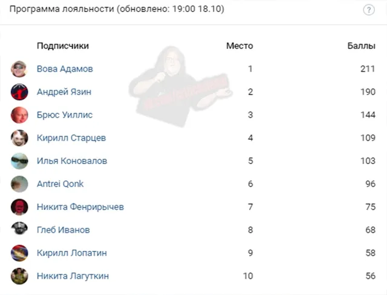

Итоги лояльности
ВКонтакте
🔱Сегодня мы снова благодарим [id347679904|Андрея Язина] за финансовую поддержку …
18 октября 2020 · №623 в выгрузке стены · оригинал во ВКонтакте ↗
![🔱Сегодня мы снова благодарим [id347679904|Андрея Язина] за финансовую поддержку …](../img/vk/623_0t.webp)

#ИтогиЛояльности@criticssteam #16
🔱Сегодня мы снова благодарим [id347679904|Андрея Язина] за финансовую поддержку сообщества. Благодаря тебе, мы с легкостью идём на самые смелые эксперименты в плане контента и уверенно смотрим в будущее, если бы не ты, мы не смогли бы раскрыть полностью свой потенциал, а может и вовсе нас уже не было, так что, действительно, огромное, искреннее спасибо!
===================
💥Итоги [https://vk.com/@criticssteam-programma-loyalnosti|программы лояльности] следующие:
🥇 [id119602395|Вова Адамов]
🥈 [id347679904|Андрей Язин]
🥉 [id491132613|Брюс Уиллис]
============
Ниже, как всегда, ТОП-10 по активности за неделю, большое всем спасибо! Kronos Quartet - Flugufrelsarinn
🔱Сегодня мы снова благодарим [id347679904|Андрея Язина] за финансовую поддержку сообщества. Благодаря тебе, мы с легкостью идём на самые смелые эксперименты в плане контента и уверенно смотрим в будущее, если бы не ты, мы не смогли бы раскрыть полностью свой потенциал, а может и вовсе нас уже не было, так что, действительно, огромное, искреннее спасибо!
===================
💥Итоги [https://vk.com/@criticssteam-programma-loyalnosti|программы лояльности] следующие:
🥇 [id119602395|Вова Адамов]
🥈 [id347679904|Андрей Язин]
🥉 [id491132613|Брюс Уиллис]
============
Ниже, как всегда, ТОП-10 по активности за неделю, большое всем спасибо! Kronos Quartet - Flugufrelsarinn